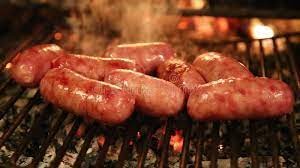

Thelsamar Blood Sausage
This particular intestine-stuffed delicacy dates back several, possibly hundreds of, generations. The people of this plate's native region found sustenance by turning the necessary culling of aggressive predators in a food production paradise. If you can get the specific ingredients that is. Boars don't always have intestines it seems...

- First, thoroughly wash out the boar intestines with clean spring water, we don't need half digested food in our bangers.
- Assuming you have already carved out a juicy bear steak (if not, check out this pleasent guide on animal butchery) mince into a paste using a friends hammer (it's a messy job, don't damage your weapon of war).
- Mix the spider ichor into the now pasted bear steak.
- Carefull stuff the boar intestines with the meat/ichor mix, tying off every when you have the desired length.
- Roast over open fire and share with friends.
Back to Main Menu